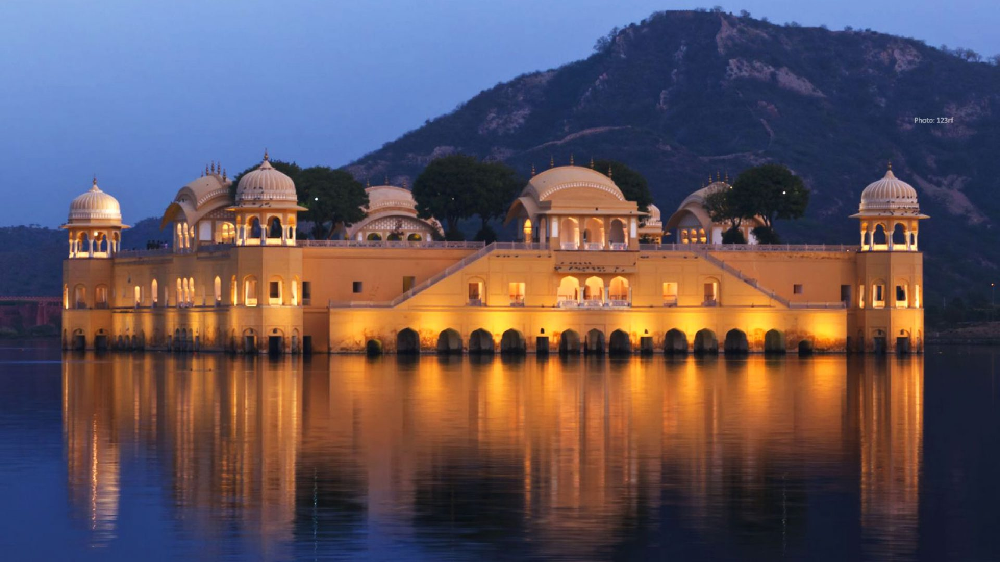

About Udaipur Fort
Certainly, Udaipur, also known as the "City of Lakes," is a beautiful city in the Indian state of Rajasthan and is famous for its palaces and forts. One of the most iconic forts in Udaipur is the "City Palace.
The City Palace of Udaipur was built over a period of nearly 400 years by various rulers of the Mewar dynasty. It is a fusion of Rajasthani and Mughal architectural styles. Architectural Splendor: The City Palace is a massive complex of palaces, courtyards, and gardens. It stands on the east bank of Lake Pichola and offers breathtaking views of the lake and the surrounding Aravalli hills. Palaces and Sections: The City Palace consists of several palaces and sections, including the Mardana Mahal, Zenana Mahal, and Fateprakash Palace. Each section has its own unique architectural features and historical significance.